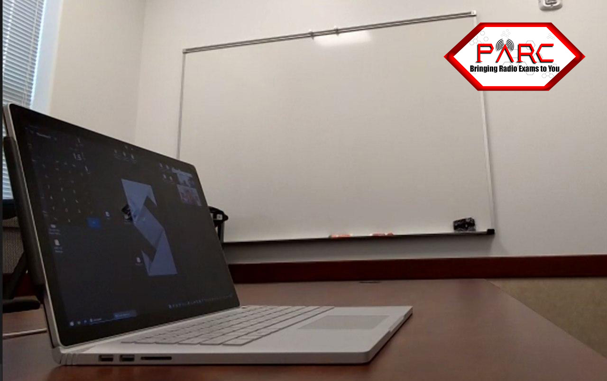
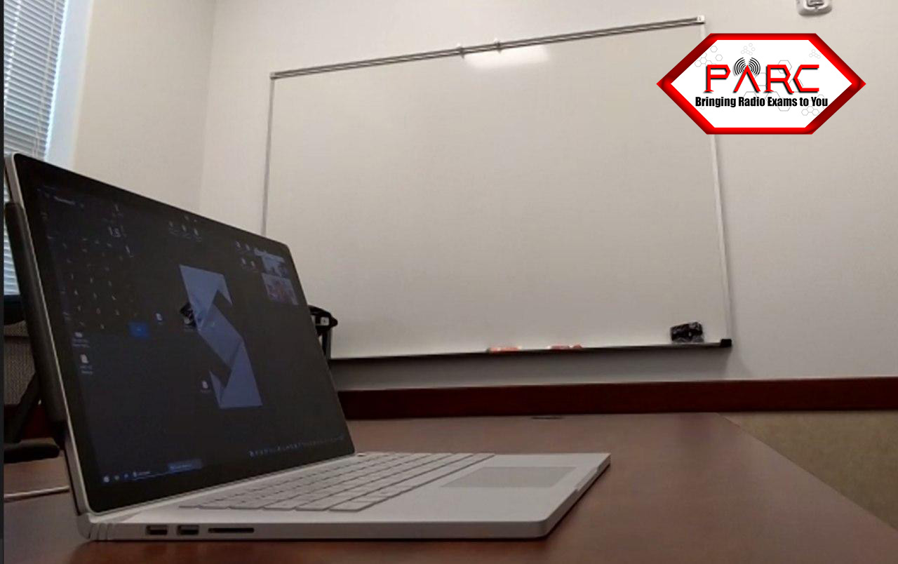

Main Content
HAM EXAM – ONLINE
Read ALL instructions and requirements for online exams before paying or registering for an exam!
Contact Us:
Our Examiners are all volunteers, not employees. This is not a business, so we do not provide instant responses via email or phone. To reach us, please email the address provided at the bottom of each page. Given that our volunteers have regular jobs, responses may take up to 24 hours, excluding holidays or system outages.
Please refrain from contacting us or the FCC about your license status until ten business days have passed. For quick answers, refer to our FAQ section. Additionally, some of our retired members actively monitor our Facebook Group and can assist with questions there. Use the Facebook button on the Home Page to join the group.
Take a course today: Ham Radio Prep makes it fast and easy to pass your ham radio license exam with an interactive online class with videos, text lessons, quizzes, and games. They've had over 60,000 successful students and offer the industry's best 100% money back guarantee if you don't pass your exam on the first try! Sign up today at www.HamRadioPrep.com and use co
upon code PARC for 20% off.
If your Payment email is not the same as the email you register with, we will not be able to match your payment to the exam. Make sure your name or your email match for payment and your registration. Email us immediately for any discrepancies. You may still receive a non-payment notice, since the system will not match up your payment automatically. Please be warned that variances in name and email can cause deletion.
- PARC VE Testing Team has received permission of the ARRL VEC and the FCC to conduct completely online video-supervised testing with strict rules and protocols for maintaining the integrity of the testing environment.
Warning: You must be fully prepared for an online exam
- The ONLINE system is more complicated and time consuming than a regular in-person exam. You MUST read and follow all the protocol on this page. Exams require a minimum of 3 volunteer examiners per session and only 1 candidate can be tested by them at a time. To be sure no one can cheat, you will be asked to scan all around the room and verify the integrity of the exam environment. You and your exam session will be recorded. If you are not comfortable with this, please consider taking the exam in-person at a future date. By signing up for an exam, you agree that you will cover any sensitive items in the room or you consent to the scanning and recording of those items.
- Please respect the time of the volunteers and those candidates that are waiting to take their exam after your exam is complete. You do this by being FULLY PREPARED. Please READ this page completely and also the FAQ page completely. Remember, this takes not only the time it takes to give you your exam, it also takes time for the VE’s to prepare for your exam and for the team to complete and submit your paperwork. Again, please respect the time of the volunteers and those candidates that are also waiting.
- TWO DEVICES ARE REQUIRED!!! There is NO EXCEPTION to this requirement. You must have a computer or laptop and a second device which will be a cellular phone, iPad, or tablet with a camera. BOTH devices will be active on the same Zoom link for the ENTIRE exam session.
- Practice for your exam: It is your responsibility to be fully prepared since you will be taking the time of volunteers and a time slot from a long list of candidates. Be sure you are consistently scoring above an 88% on 15 or more practice tests before you schedule an exam.
- Ham Radio Prep makes it fast and easy to pass your ham radio license exam with an interactive online class with videos, text lessons, quizzes, and games. They've had over 60,000 successful students and offer the industry's best 100% money back guarantee if you don't pass your exam on the first try! Sign up today at www.HamRadioPrep.com and use coupon code PARC for 20% off.
Top Bundles with Coupon Code Applied:
- All Access Pass
- Technician + General Bundle
- Technician Course
- ARRL Exam Review for Ham Radio™, a free site from the national group that you may want to join and use for referencing a wealth of information.
- For Practice go here, a free site with lots of tips. It has an inexpensive companion you can use on the go.
https://hamstudy.org
- For classes: https://nescitech.org/product-category/courses/online/
How to register for a session:
- First you need to schedule. Do this by finding and select an available TIME SLOT using the tab “Schedule” above (A time slot is a time that you can expect to test, you will come in earlier than your time slot at the session time)
This is when you pay. - Pay for the exam when you schedule. (We are not a business and do not make a profit, we are all volunteers. We pay a fee to PayPal, Stripe, or the Processor when you use a credit card. Payment will be made in the schedule tab.)
- Watch for an email containing a link to REGISTER for the exam session. (An exam session is a time period where several applicants are testing individually)
- Register for the exam session. You will receive a pin number for your session. We do NOT need this for your exam. It is confirmation of registering only!
Be sure you are consistently scoring above an 88% on practice tests before you schedule an exam. Exam Fee Payment: You must pay the $15 exam fee when you select your time-slot electronically through PARC VE TESTING via PayPal, Stripe, or the Processor. You must do this when you schedule your time-slot for your exam. Please do not check the goods and service box.-
Basic Qualification Question: Applicants are required to answer the FCC basic qualification question (felony question). If an applicant answers YES, they must submit the required documentation directly to FCC as outlined in these instructions http://www.arrl.org/fcc-qualification-question, and reference the application file number. The candidate must take action within 14 days of the application filing date, or the application will be dismissed by FCC. The candidate should not communicate any information or documents to the Volunteer Examiner team or the VEC. - WARNING: Failure to pay for the exam will result in cancellation without further notice.
- Please do not pay using the pay tab above, the payment is made when you schedule a time-slot under the schedule tab. Failure to follow these instructions may cause a double payment resulting in additional fees for us as well. Thank you for reading all of the instructions.
- Please find a time slot in our schedule using the tab marked schedule above. This will be your time slot.
NO REFUNDS ARE GIVEN FOR MISSED EXAMS, EQUIPMENT FAILURE, OR ANY OTHER REASON!
- At least 45 minutes prior to your exam session, we will send you a link to join a zoom meeting. Please be set up and ready to join the call 45 minutes prior to your exam.
Prepare the following BEFORE your online exam session:
- We will send you a link to join a zoom meeting at least 45 minutes prior to your exam. Please be set up and ready to join the call 45 minutes prior to your exam. The link will come from vetesting@yahoo.com, check your spam folder if you don't have it within at least 2 hours before your exam.
- PHOTO ID: An approved legal photo ID will need to be shown on camera to the VE Team. For online sessions the Exam Team will only accept an unexpired US Passport, state-issued driver’s license, or non-driver state ID for adults. (Must have your valid current residential address, no business, mail service, or non-residential addresses)
- Under-18 students may show either of the above items, or a student may show a school ID, or two documents listed in our ID section below, and a legal guardian presents a photo ID.
- NOTE: Any identification presented must be a physical ID. *NO Mobile ID, digital ID, photo, photocopy, facsimile, or other virtual type identification will be accepted.
- Parental Consent: For children age 13 and under, a parent must complete this COPPA Consent Form and follow directions for submitting it.
- Federal Registration Number (FRN): If you do not have an FRN, you will be able to register for one at the web link we send you for the exam application. (The Exam Team will send you a link to an exam registration page.) Or, you can get an FRN ahead of time by visiting the FCC’s Registration page and clicking “Register for an FRN.”
- Exam Registration: Sometime before your scheduled exam you will receive a link to your specific exam session where you will fill out an exam registration. Please do this as soon as you receive the link. Your application will generate a 4-digit access code which we will use to get your exam later. The link will come from vetesting@yahoo.com, check your spam folder if you don't have it within at least 2 hours before your exam.
- License Upgrading: If you plan to take the General or Amateur Extra exam, you must email to the Exam Team an electronic copy of your current amateur radio license or any Certificate of Successful Completion of Examination (CSCE) you may hold from previous exam sessions. Email them to vetesting@yahoo.com as a PDF file attachment before you register for the exam..
- One Exam per Session: Due to the difficulty and time requirements of administering exams online, you may take only one exam per time slot. If you do not pass an exam and want to re-test, you must make another appointment at another time which can be the same day. You will have to pay the $15 fee for each retest. We do not offer additional exams at the same session online without advance request, approval, and scheduling.
- Certificate of Successful Completion of Exam (CSCE): The Exam Manager will send you a CSCE that includes your digital signature that you will keep for your records when you pass any element within 72 hours of exam completion. The instructions to retrieve your callsign are located above your digital signature on the CSCE.
Privacy Information:
- Please know that getting a ham radio license will make your name and address become public information when the new license is issued. See details here: http://www.arrl.org/fcc-licensee-privacy. Social security numbers, phone numbers, and email addresses are never published. If you need to use a PO Box for mailing purposes on your Form 605, you may email your physical address to vetesting@yahoo.com in advance and state your reason and preference of keeping your physical address private. Put in the subject line, “Physical Address for Non-Public Record Only.”
Prepare your exam room BEFORE the exam:
- An acceptable room is a room free of distractions and includes a door to prevent anyone from entering. Great choices are restrooms or closets, but these are not the only choices that work well.
- Please open any closet doors or shower curtains for the scan and then close them for the exam.
- The following choices of a room are NOT allowed: No vehicles or outdoor locations and no location that has uncontrollable noise or distractions.
- A desk, countertop, or table is good. Laps and other options can work. Please DO NOT SIT on a BED! Do not sit on couches or in chairs that recline or rock. Please be respectful of the exam team and the exam. This is a formal exam and should not be taken lightly.
- Clear the room of all exam and non-exam materials, notes, books, posters, computer screens, or anything that could aid in taking the exam. Many people just use a bathroom, and that simplifies everything.
- Clear your exam table and floor of ALL items within reach or view that would raise suspicion, such as papers, sticky notes, electronic items, monitors, headphones, drink containers, waste baskets, vapes, ashtrays, tobacco products, and anything unnecessary for the exam.
- Clear the room of any distracting items that could take your attention off of the exam. No drinks, food, hat, watch, calculators, vapes or tobacco products.
- Clear the room of all amateur radio related materials, notes, books, posters, computer screens, or anything that could aid in taking the exam.
- Clear the room of any distracting things that could take your attention off of the exam.
- Warn family members not to enter the room during the exam. Also make sure they do not make any loud noises that can be heard in the exam session. This would include barking dogs or cats meowing loudly.
- You must not have in the exam room any other people or pets.
- When in Waiting Room, do NOT test screen share or any other functions of zoom, doing so will result in you being removed from the session!!!
Prepare your computer BEFORE the exam:
*WARNING* Do NOT touch your phone when we bring you into the exam session. We will be making adjustments to it while you are being given instructions on your computer. Pay attention to your computer ONLY! Failure to do this will result in a feedback loop and your phone being deleted from the exam. If this happens, we have to move to the next applicant while you shut down all your devices and rejoin. We will tell you when you touch your phone. FOLLOW THE VERBAL INSTRUCTIONS CAREFULLY to avoid wasting time.
- When in Waiting Room, do NOT test screen share or any other functions of zoom, doing so will result in you being removed from the session!!!
- TWO DEVICES WITH CAMERAS RUNNING ZOOM ARE REQUIRED FOR THE EXAM SESSION! High-speed internet is needed to take an online exam. This is instructions for the computer setup only.
- A computer must be a PC, Mac or Laptop running Microsoft OS or Mac OS. Some Linux devices may work but many may not. You can NOT use an iPad, notebook, or Chromebook for the main computer to take the exam. You must use Windows 10 or higher. No Windows 7 or older and no Internet Explorer.
- NO EXTERNAL MOUSE OR KEYBOARD IS NEEDED OR ALLOWED to be connected to a laptop!
- You will use ONLY the A, B, C, and D keys on your keyboard to select your answer for the questions. Questions advance automatically during the exam. DO NOT SCROLL or TOUCH YOUR TRACK PAD during the exam!
- You must have a working PC/ laptop computer (not Chromebook) with built-in web cam that looks directly at your face, microphone, and reliable Internet service.
- Be sure the computer is fully charged or plugged in.
- Remove all audio devices, headphones, earbuds, smartwatches, hats, and anything that could be considered suspicious and unnecessary for the exam. No external mouse or Keyboards on laptop. Does not apply to desktops.
- Disable any chat, alerts, Bluetooth connections, virtual screens, or pop-up apps.
- Close ALL applications except Zoom and optional calculator app. DO NOT HAVE ANY BROWSERS OPEN WHEN WE START SCREEN SHARE!!!
- No, we do not need your PIN, FRN, or any browsers of any kind running. This will slow us down while we tell you to close everything down except the calculator app and zoom session. Zoom must run as an APPLICATION! It cannot be in a browser!!! No external Mouse or Keyboards is permitted when using a lapto, you must have a wired keyboard and mouse for a desktop.
- You must have only one display screen running on the computer. Disable or cover any virtual screens. The exam team may end the exam immediately for non-compliance. Make sure the background shows.
- NO VIRTUAL BACKGROUNDS OR BLINDS, we must see the entire room!
- The exam is only three and a half to four inches wide and not very tall, you will be asked to shrink your browser to fit between the calculator on the left side of the screen and Zoom videos on the right side of the screen.
- Set your screen up like the images below:

- You may optionally have a computer calculator app on your screen during the exam. Load it in advance if you need it. You will need it to be small and placed on the LEFT HAND side of the monitor screen. Calculator must be basi, standard, or occupy the same vertical space as shown in the figure above.
- Download Zoom on both computer and phone and TEST them. Join audio on the computer but not the cell phone. IT IS IMPERATIVE THAT YOU PRACTICE USING ZOOM AND KNOW HOW TO USE IT. You cannot use zoom in a browser.
- ALREADY HAVE A ZOOM ACCOUNT? MAKE SURE YOU FOLLOW THESE INSTRUCTIONS:
If you already have a Zoom account, please LOG OUT of your Zoom account before clicking our link to join the exam. Otherwise you will be connected via your own Zoom account. You will not be offered the opportunity to correctly set the "name - computer/phone" as required in the instructions. First, open the app on both of your device(s), and sign out from your account prior to clicking on the Exam Session link. Then, join using our link in the email for both of your devices. You will then be given the opportunity to put in your name before joining the session. This is where you put your name and whether it is computer or phone. Then select to continue and join session. - Turn on video when in Waiting Room on both your computer and your cellular phone. Turn on the audio and unmute your microphone on the computer. DO NOT accept audio on your cellular phone. Again, it is VERY IMPORTANT that you decline/deny audio on your cellular phone.
Prepare your cell phone camera BEFORE the exam:
- When in Waiting Room, do NOT test screen share or any other functions of zoom, doing so will result in you being removed from the session!!!
- Leave your phone alone when we admit you to the exam!!!
- Remember do not touch your phone when bring the device into the session. We will turn off audio. Keep your attention on your computer. If it does not work, we will disable using this procedur:
- HOW TO DENY AUDIO ON A PHONE: For an iPhone you click “CANCEL”, for other devices you click “DENY” or “DIAL BY PHONE” or just click on the speaker’s video and not choose any option.
- You must have an Internet-connected cell phone with built-in camera.
- Be sure the cell phone is fully charged or plugged in.
Learn how to reverse the video from “selfie” mode to rear camera view and how to hold the camera in horizontal orientation.
 

- You will use the phone rear camera to scan the room, the computer, and your hands for security compliance, then use the camera to observe you during the session. By signing up for an exam, you agree that you will cover any sensitive items in the room or you consent to the scanning and recording of those items.
Find a way to prop the phone up to see the computers keyboard and monitor from a front & side view for the duration of the exam. See Example Above.

- Download Zoom on both computer and phone and TEST them.
- Join audio on the computer but
not the cell phone. Muting the audio on cell phone or device does not prevent feedback. IT IS IMPERATIVE THAT YOU PRACTICE USING YOUR CAMERA AND KNOW HOW TO USE IT. DO NOT CONNECT AUDIO ON THE CELLULAR PHONE!!! Do not touch your phone when we bring it into the session, we will disable the audio. Keep your attention on the computer. - Turn on video when in Waiting Room on both your computer and your cellular phone. Turn on the audio and unmute your microphone on the computer. DO NOT accept audio on your cellular phone. Again it is VERY IMPORTANT that you decline/deny audio on your cellular phone. Don't touch your phone when we admit you to the exam room.
Know the Rules for ONLINE Exams:
- Paper
- Pen or pencils
- Calculators
- Multiple monitors
- iPads or Notebooks
- Chromebooks
- Linux based computers (only Mac OS or Microsoft OS)
- ANY Bluetooth devices!
- External Keyboards or Mouse on Laptops
- Polarizing glasses
- Sunglasses
- Hats or caps
- Watches
- Neck loops
- Ear bud, EarPods, or Ear wigs
- Headphones
- ANY Bluetooth devices!
- Any Eletronics
- ANY Ham related items.
- Charts
- Formulas
- Notes
- Papers related to the exam including your PIN or instructions for the exam
- Drinks or food of any kind
- Any people or pets
- Calculators
- Notepads or paper
- External Keyboards or Mouse on laptops
- Docking Stations
- Unusual Wires
- Cameras
- External Microphones
- Homepods or smart devices
- Follow all instructions outlined on the website for online exams
- Provide a state-issued driver’s license or state-issued non-driver’s photo ID
- Minors must provide ID as well along with their parent presenting their ID
- Minors must have completed a COPPA form and emailed it in prior to exam.
- You must have an FRN for online exams, but do not bring it to the online sessions
- You may not talk during the exams or mouth the words even if no sound is coming out
- Keep both hands on the keyboard area in view of phone camera
- Always keep eyes on the screen only.
- You must always have audio and video on your laptop operational during the exam
- You must use a cellphone camera viewing across your laptop from a 90-degree angle. That clearly shows your keyboard, you, and the computer.
- Turn OFF Bluetooth on all your devices.
- Disconnect any peripherals from your devices.
- Turn on DND (Do Not Disturb)
- Use only the A, B, C, and D Keys to select your answer.
- We test US Citizens and those with a US Passport or qualifying documentation as listed in the ID requirements. Failure to provide approved ID will result in exam fee forfeiture.
- We require a U.S. Passport, Driver’s License or State Issued ID. This must be an unexpired ID. A US issued Passport / Visa with additional paperwork (validating your address) may be considered. If your identification is expired, you will need to get prior approval for the exam.
- We will not test anyone outdoors or in any place other than a room that can be secured.
- We will not test people in vehicles of any type whether moving or stationary.
- A noisy environment will void your exam. This includes children, machinery, traffic, etc... You would not be permitted to have anyone with you at an in-person exam and the room has to be quiet. We expect the same an online exam. Even if the noise would not distract you, it will interfere with the exam and examiners proctoring the test. Therefore, you need to insure a quiet distraction free environment for the full duration of the exam. Find a sitter, send the people outside, find another location, or attend an in-person exam.
- For adults one legal photo ID (identification) from the list below:
- State issued Driver’s License (must have your valid current residential address, no business, mail service, or non-residential addresses)
- State issued Photo ID card (Unexpired with your valid residential address)
- US Government issued Passport (No non-US passports)
- Students/minors without a photo ID needs to bring one of the above items or one of the items from the list below ONLY if a legal guardian presents their photo ID and identifies themselves verbally along with the student/minor; otherwise non-photo IDs are required. Minor children (under the age of 13) must be accompanied in the room by an adult during the test.
- The student/minor must present one of the following documents in addition to the parent or legal guardians ID from the list above:
- Non-photo State ID card (some states still have them)
- Birth certificate (must have the appropriate seal)
- Social security card
- Minor's work permit
- School ID card
- School or Public Library card
- REPORT CARDS ARE NOT ACCEPTABLE.
Privacy Information:
- Please know that getting a ham radio license will make your name and address become public information when the new license is issued. See details here: http://www.arrl.org/fcc-licensee-privacy. Social security numbers, phone numbers, and email addresses are never published. If you need to use a PO Box for mailing purposes on your Form 605, you may email your physical address to vetesting@yahoo.com in advance and state your reason and preference of keeping your physical address private. Put in the subject line, “Physical Address for Non-Public Record Only.”
The Exam Manager will read the PROTOCOL for ONLINE Exams:
- Protocol for Online Exams: (Read this now. The Exam Manager will read it to you again at the start of the exam.) (*Parent or guardian of a child candidate must be present for the rules and answer questions.)
- You must complete the test without any interruptions that would raise suspicion about the integrity of the testing environment.
- You are asked to complete the exam within your assigned 15-minute time block, which is more than enough time for most candidates.
- You agree to keep attention on your computer screen at all times. Eyes may not wander to other parts of the room and you may not leave your seat during the exam session.
- You are not allowed to read the questions or answers out-loud. You cannot talk to yourself. Mouthing the words even if no sound is coming out, is talking to yourself.
- Please remove any drinks, snacks, or anything else from around your testing area that might distract you.
- You may not have visitors or pets in the room during the exam and after exam, so please close and lock the doors.
- You will use your cell phone camera to scan the room to show that there is nothing that could aid in taking the exam. By signing up for an exam, you agree that you will cover any sensitive items in the room or you consent to the scanning and recording of those items.
- Then you will place your cell phone, so it views you, your keyboard, and both hands during the exam.
- You will NOT be able to use scrap paper, manual calculators, or any other kind of assistance, however, if you wish, you may pre-load an on-screen calculator app. Do you want to use a calculator app? Make sure you have closed all of your browsers, email, and notes (THEY MUST BE QUIT COMPLETELY), the only thing that should be open now, is your calculator app and the zoom app!
- You must agree to share your entire screen with the exam team, not just the browser. Do you agree to share your screen?
- You must agree that the exam session will be recorded and stored for up to 30 days in case of any question about a possible breach of exam protocol. Do you agree to be recorded?
- You must agree that if the Exam Team suspects a possibility of cheating, the exam may be terminated and the exam fee forfeited, and you would be barred from taking future online exams. Do you agree?
- The Exam Manager will ask you to show your picture ID, front and back, in the camera until every examiner can verify your identity.
- The Exam Manager will now turn on the recorder to record your screen, your web cam, and your phone camera view.
- The Exam Manager will ask you to use your phone camera and step back to show the computer and workspace, scan around the room, including walls and floor, under table and chair, under laptop and keyboard, with a closeup of the computer, keyboard, hands, and arms. By signing up for an exam, you agree that you will cover any sensitive items in the room or you consent to the scanning and recording of those items.
- The Exam Manager will ask you to leave the phone on and propped up at a distance aimed toward the computer, so that it can view you, your hands, and the computer.
- The Exam Manager will ask you to share via Zoom your full desktop, not just a browser window. You do this by selecting the green “SHARE SCREEN” button at the bottom center of the screen followed by selecting the blue “SHARE” button in the bottom right corner of the pop-up window.
- The Exam Manager will ask you to load and arrange a browser window in the middle of the screen (the exam questions are only 4 inches wide) and optionally position a calculator app next to it, and show that the calculator memory is clear.
- The Exam Manager will ask you to open your “Display Settings” to verify that there is only one video session running.
- The Exam Manager will ask you to type in the browser address field an address to load the exam engine. The Exam Manager will ask you to click on “JOIN EXAM SESSION”.
- The Exam Manager will ask you to enter the session manager’s call sign and your 4-digit exam code. The Session Callsign is KJ4PJE.
- The Exam Manager will remotely give credentials to access an exam session. Please verify your name, address, and phone number at this point. After the exam, any changes will result in voiding the exam. Changes can only be made at this point.
- Please verify your name, address, and phone number at this point. After the exam, any changes will result in voiding the exam. Changes can be made only at this point.
- The Exam Manager will tell you that when you finish the exam to press the Grade Exam button at the bottom of the page or the top right corner.
- The Exam Manager will ask you to keep your attention on the screen and keep your camera and microphone on.
- All Exam Team members now shut off their video and microphones. The exam will now begin. You can shortcut to the next question by pressing the RIGHT ARROW KEY on your keyboard.
- When you finish, press the Grade Exam button, and your score will show. We are unable to show which specific questions you missed.
- Now the Exam Manager will ask you to click Finish and Sign Forms button, then verify your name and address on the screen, then electronically sign your name at the bottom to complete your exam application and CSCE.
- You will now click the Finish Session button.
- Then click the LOGOUT button.
- The Exam Manager now turns OFF the recorder and releases your shared screen.
- The Exam Manager will email you the Certificate of Successful Completion of Exam (CSCE) within 48 hours.
- The Exam Manager will explain that your exam application and scores will be uploaded electronically this evening, so your license will appear in the FCC database within about 5-7 working days.
- The Exam Manager will encourage you to join a local radio club for further learning opportunities.
- The Exam Manager will encourage you to join the American Radio Relay League, ARRL.ORG, for further learning opportunities and to support amateur radio on the national level.
- The Exam Manager will explain how to reach out to PARC or AUARC for any questions regarding exams and additional training. We strongly recommend certain types of training and are willing to offer options upon request. There are many courses offered in person and online and not all are the same. For online, we highly recommend New England Sci-Tec and can provide a referral if needed.
- You are now free to leave the session. Click the red button in the bottom right corner of your screen that displays the word, “LEAVE”. (The Exam Manager may disconnect the candidate from the session.)
Contact Us:
Our Examiners are all volunteers, not employees. This is not a business, so we do not provide instant responses via email or phone. To reach us, please email the address provided at the bottom of each page. Given that our volunteers have regular jobs, responses may take up to 24 hours, excluding holidays or system outages.
Please refrain from contacting us or the FCC about your license status until ten business days have passed. For quick answers, refer to our FAQ section. Additionally, some of our retired members actively monitor our Facebook Group and can assist with questions there. Use the Facebook button on the Home Page to join the group.